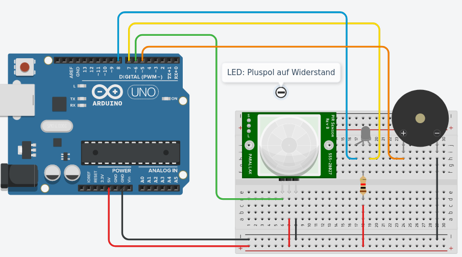
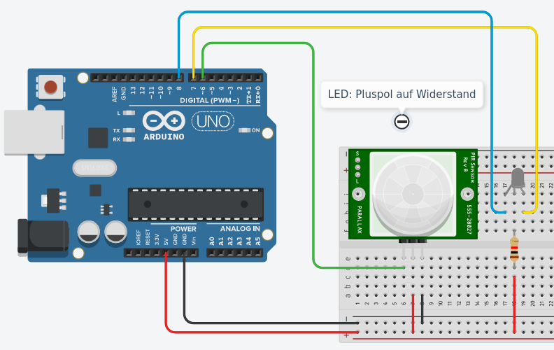

Der PIR-Sensor gibt über einen Pin ein Signal aus, sobald er eine Bewegung registriert.
Die Pins des PIR-Sensors sind meistens unter der weißen Plastikhaube beschriftet. Diese Haube ist nur aufgesteckt - du kannst sie vorsichtig nach oben abziehen.
Verbinde jetzt die Pins passend zur Beschriftung:

Definiere zunächst für die Pins Variablen und setze in der setup()-Methode den Modus für die Pins.
int led = 7;
int sensor = 6;
void setup(){
pinMode(led,OUTPUT);
pinMode(sensor,INPUT);
}
In der loop()-Methode wird der Wert des Sensors ausgelesen.
Wenn dieser Wert HIGH ist, wird die LED eingeschaltet, sonst wird sie ausgeschaltet.
void loop(){
int wert=digitalRead(sensor);
if (wert==HIGH){
digitalWrite(led,HIGH);
delay(1000);
} else {
digitalWrite(led,LOW);
}
delay(10);
}
Teste deine Alarmanalage.
Wenn die Alarmanlage eingeschaltet ist, soll die LED grün leuchten.
Sobald eine Bewegung wahrgenommen wird, soll die Farbe der LED von grün auf rot wechseln.
Ersetze die rote LED auf dem Breadboard durch eine Zweifarb-LED.
Achtung: Bei unseren Zweifarb-LEDs muss der gemeinsame Pol an den Pluspol angeschlossen werden. Du musst deine Schaltung daher etwas stärker umbauen:

Ändere dein Programm wie folgt ab: